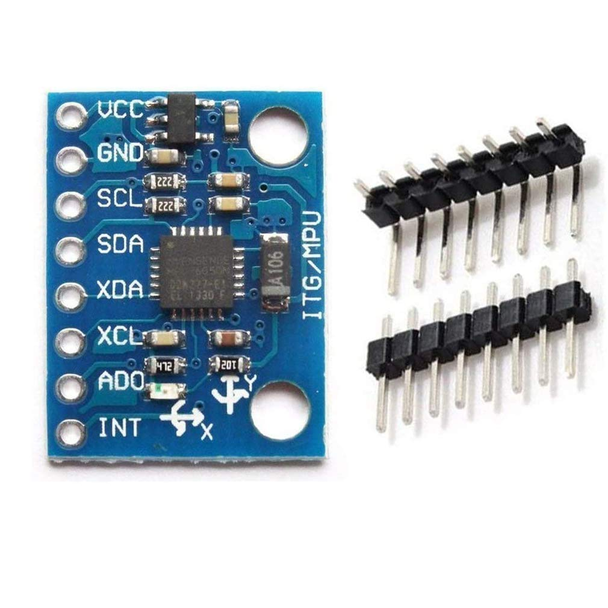

<!doctype html><html lang="ko"><meta charset="utf-8"><title>GY-521 좌표축</title>
<style>
@font-face{font-family:Pretendard;src:url('/assets/Pretendard-Regular.ttf')}
body{margin:0;font-family:Pretendard,'Malgun Gothic',sans-serif;color:#253247}
.canvas{position:relative;width:1200px;height:760px;background:#DFEAFF}
.frame{position:absolute;left:25px;top:34px;width:1144px;height:682px;border:3px solid #315DAB;border-radius:26px;background:#F7FAFF}
h1{position:absolute;left:68px;top:44px;font-size:37px}
img{position:absolute;left:50px;top:132px;width:580px;height:535px;object-fit:contain}
dl{position:absolute;left:680px;top:166px;margin:0;font-size:38px;line-height:1.2}
dt{font-weight:700;margin:0 0 12px;color:#315DAB}
dd{margin:0 0 37px}
.credit{position:absolute;left:68px;bottom:52px;font-size:24px;color:#435576}
</style>
<main class="canvas"><div class="frame"></div><h1>GY-521 부품면과 양의 축 방향</h1>

<svg width="1200" height="760" style="position:absolute;inset:0" aria-label="+X 오른쪽, +Y 위쪽, +Z 보는 쪽">
<defs><marker id="arrow" viewBox="0 0 10 10" refX="8" refY="5" markerWidth="6" markerHeight="6" orient="auto"><path d="M0 0L10 5L0 10Z" fill="context-stroke"/></marker></defs>
<g stroke-width="8" fill="none" marker-end="url(#arrow)"><path stroke="#B82F42" d="M240 431H528"/><path stroke="#176F59" d="M240 431V194"/></g>
<circle cx="240" cy="431" r="27" fill="white" stroke="#315DAB" stroke-width="6"/><circle cx="240" cy="431" r="8" fill="#315DAB"/>
<g font-size="44" font-weight="700" stroke="white" stroke-width="4" paint-order="stroke"><text x="516" y="406" fill="#B82F42">+X</text><text x="262" y="210" fill="#176F59">+Y</text></g>
</svg><dl><dt>X축 · 롤</dt><dd>+X는 오른쪽</dd><dt>Y축 · 피치</dt><dd>+Y는 위쪽</dd><dt>Z축 · 요</dt><dd>⊙ +Z는 보는 쪽</dd></dl>
<div class="credit">SunFounder 제품 사진에 축 방향을 표시했습니다.</div></main>